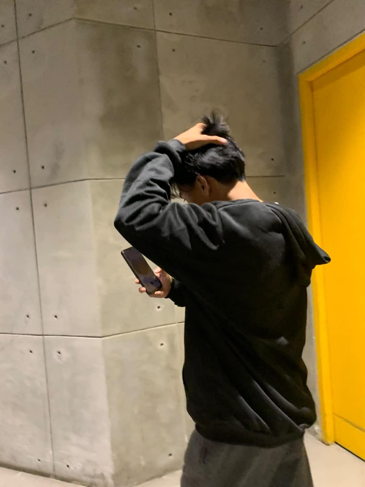

Hello, I'm
John Loyd Pelayo
I am a second-year Information Technology student who enjoys building websites from scratch. I am still growing as a developer, and this portfolio, written in plain HTML and CSS, shows what I have learned so far.

What I am working on
- Building web projects for my coursework using HTML and CSS
- Learning JavaScript to make my websites more interactive
- Studying MySQL to understand how data is stored and managed
- Using GitHub to organize and share my projects